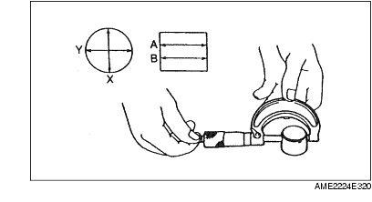

TAPPET INSPECTION
A6E242412310E01
1. Measure the tappet hole inner diameter in X and Y directions at the two points (A and B) shown.
-
Inner diameter:
-
31.000-31.030 mm {1.2205-1.2216 in}
2. Measure the tappet body outer diameter in X and Y directions at the two points (A and B) shown.
-
Outer diameter:
-
30.970-30.980 mm {1.2193-1.2196 in}

3. Subtract the tappet body outer diameter from the tappet hole inner diameter.
-
• If not as specified, replace the tappet or cylinder head.
-
Clearance
-
Standard:
-
0.02-0.06 mm {0.0008-0.0023 in}
-
Maximum:
-
0.15 mm {0.006 in}